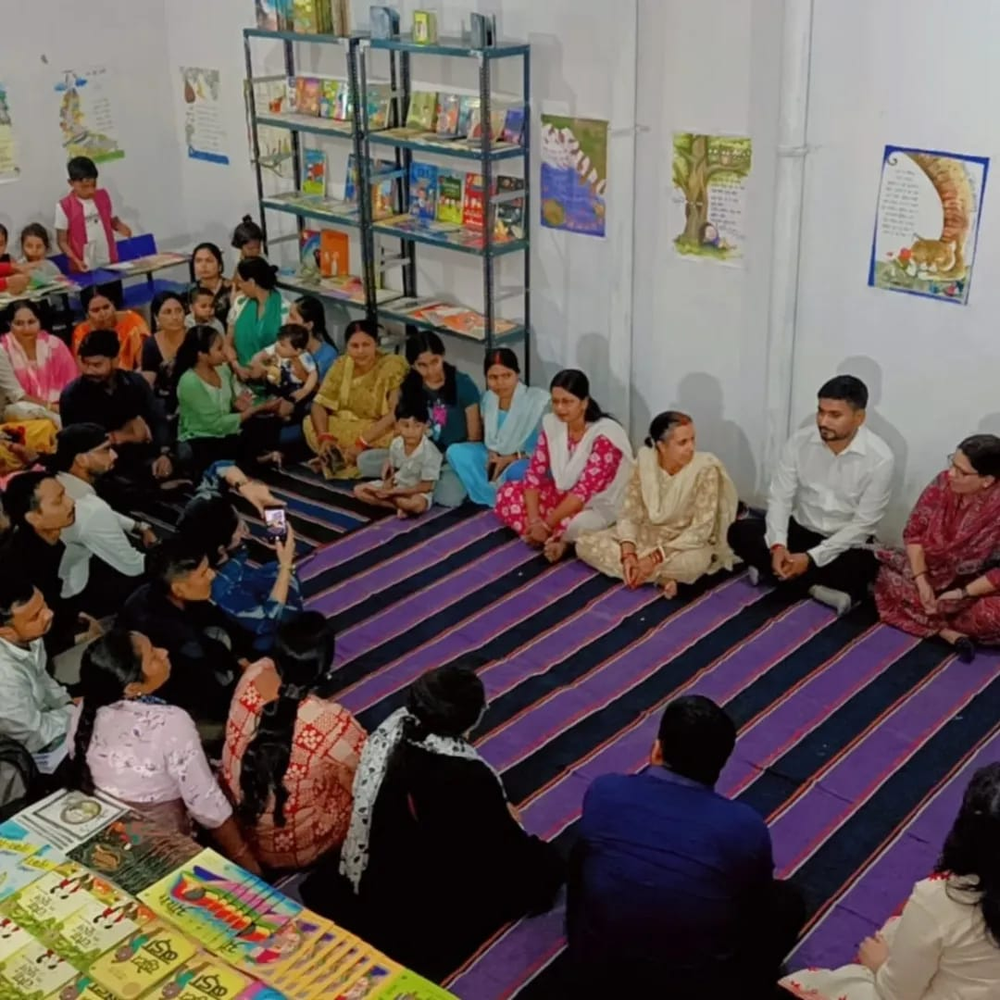
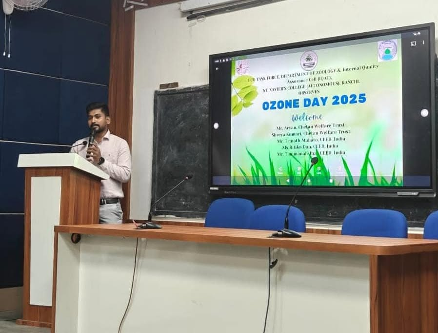
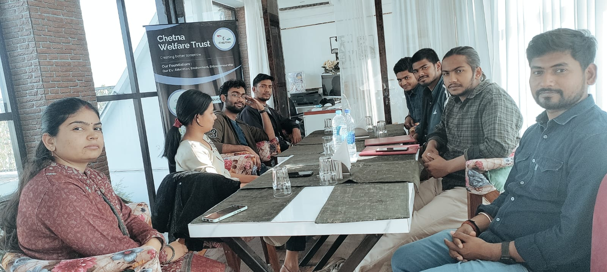
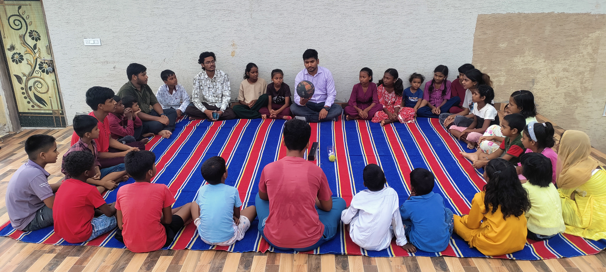
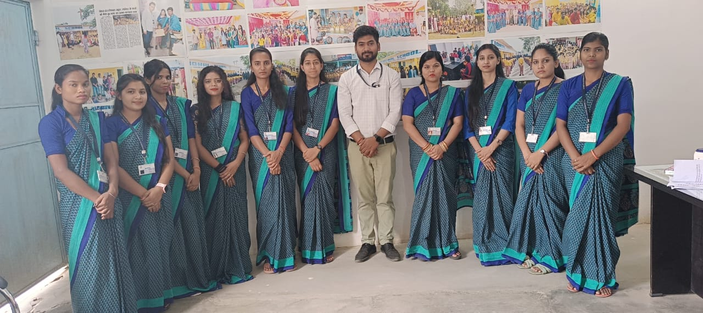
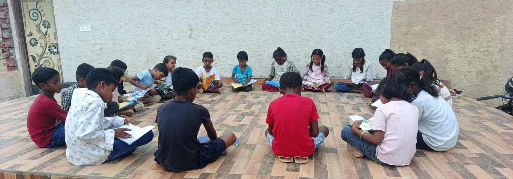
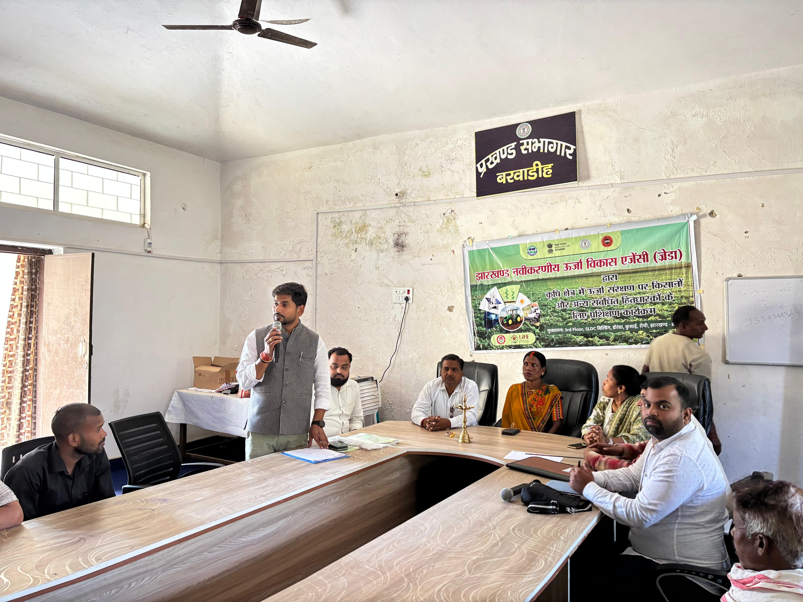
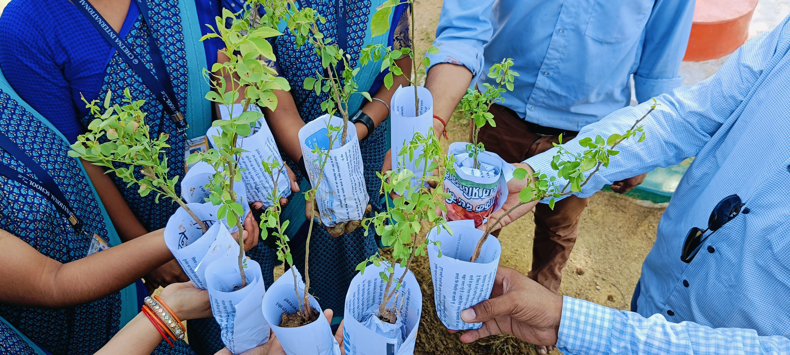

Our programs are designed to empower children, youth and communities through learning opportunities, digital access, leadership development and sustainable growth initiatives.
Through community-driven initiatives, we address educational, social and developmental challenges faced by underserved communities.
Supporting quality learning, literacy and academic growth.
Expanding access to technology and digital literacy.
Developing leadership skills and community participation.
Promoting teamwork, confidence and healthy lifestyles.
Preparing youth for employment and future opportunities.
Encouraging environmental awareness and conservation.

Education is at the heart of our mission. We work to ensure that every child has access to learning opportunities that help them build confidence, knowledge and a brighter future.
Through community libraries, foundational learning support, reading initiatives and school engagement programs, we help children strengthen their academic journey and personal development.
In today's world, digital literacy is essential for education, employment and social participation. We work to ensure that children and youth from underserved communities are not left behind in the digital age.
Through technology access, digital learning opportunities and skill development initiatives, we empower young learners to confidently navigate and benefit from the digital world.


Young people have the potential to become changemakers within their communities. We create opportunities for youth to develop leadership skills, confidence and a sense of social responsibility.
Through mentoring, community engagement and leadership initiatives, we empower youth to actively participate in solving local challenges and creating positive impact.
Sports are powerful tools for learning, leadership and personal growth. Through sports-based activities, we help children and youth develop discipline, teamwork and resilience.
Our programs encourage healthy lifestyles, social inclusion and positive engagement while creating opportunities for young people to discover their strengths and talents.


The future belongs to empowered youth. At Chetna Welfare Trust, we prepare young people with practical skills, career guidance, and personal development opportunities that help them succeed in education, employment, and entrepreneurship.
Through mentorship, leadership training, digital literacy, and skill-building initiatives, we inspire confidence, encourage innovation, and equip youth to become responsible, independent, and future-ready individuals.
Many children discontinue their education due to economic, social or personal challenges. We work closely with families, schools and communities to identify these children and help them reconnect with learning opportunities.
Through awareness campaigns, bridge learning support, community engagement and school collaboration, we strive to ensure that no child is left behind.


Sustainable development is essential for building resilient communities. We support awareness and capacity-building initiatives focused on energy conservation, environmental responsibility and efficient resource utilization.
Through training programs, community engagement and collaboration with stakeholders, we encourage practices that contribute to a greener and more sustainable future.
We believe that a healthy environment is essential for thriving communities. Through awareness campaigns, community participation, and sustainable practices, we encourage individuals to become active stewards of the environment.
Our initiatives promote tree plantation, waste management, cleanliness drives, water conservation, and climate awareness to create greener, healthier, and more resilient communities for future generations.

Join us in building stronger communities through education, leadership, digital inclusion and sustainable development. Every contribution, partnership and volunteer effort helps create opportunities for those who need them most.